Каталог
Каталог, який можна взяти в руки
Колірне віяло Dvatone поєднує реальні зразки покриття з цифровим каталогом: оберіть відтінок на екрані, перевірте його на картці при своєму світлі.


01Колірне віяло
Зразки покриття на одній картці
Віяло Dvatone складається зі смужок із реальним покриттям. На кожній видно, як гранули лягають на базовий тон, і яка в них глибина кольору.
Це робочий інструмент для дизайнерів, архітекторів і власників житла: його можна покласти до стіни, до підлоги, до меблів і порівняти.
Віяло поставляється в чохлі, який захищає зразки.
- Обкладинка
- Чорна, з логотипом Dvatone
- Зразки
- Реальне покриття, а не друк
- Чохол
- Захищає зразки
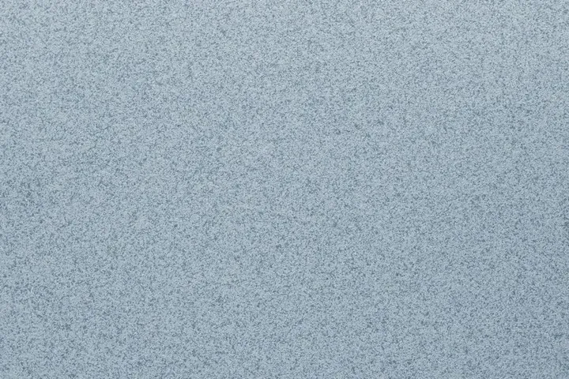
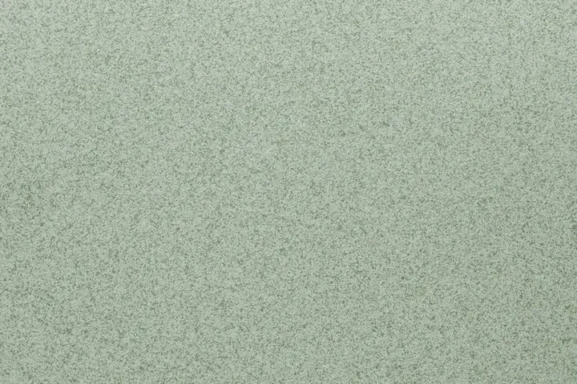
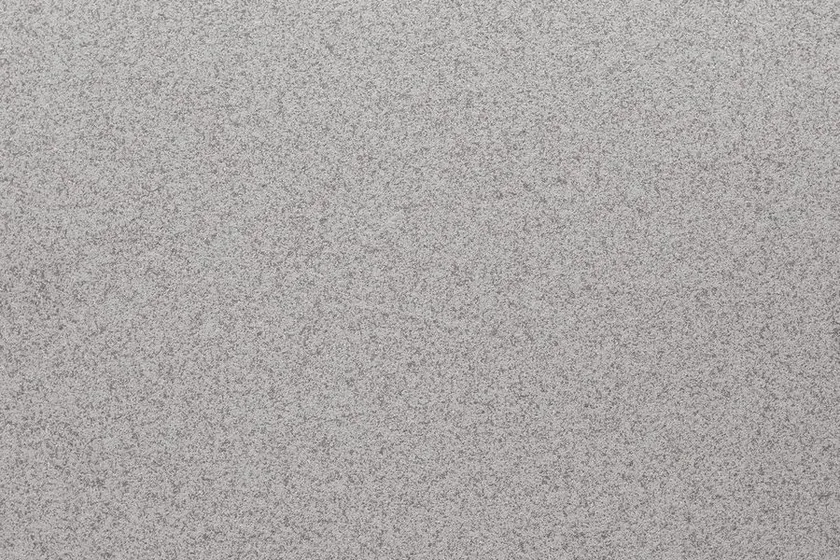
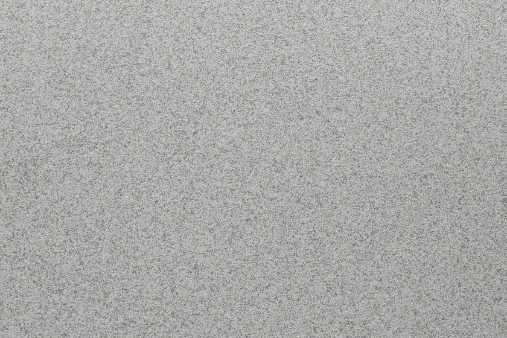
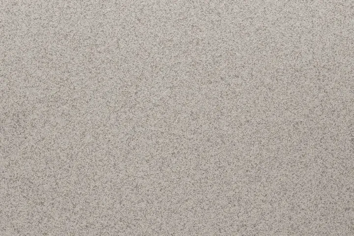
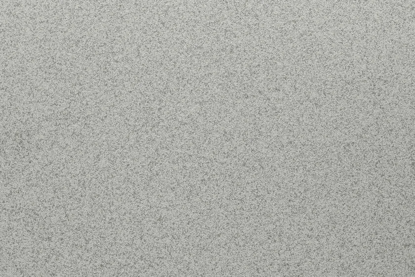
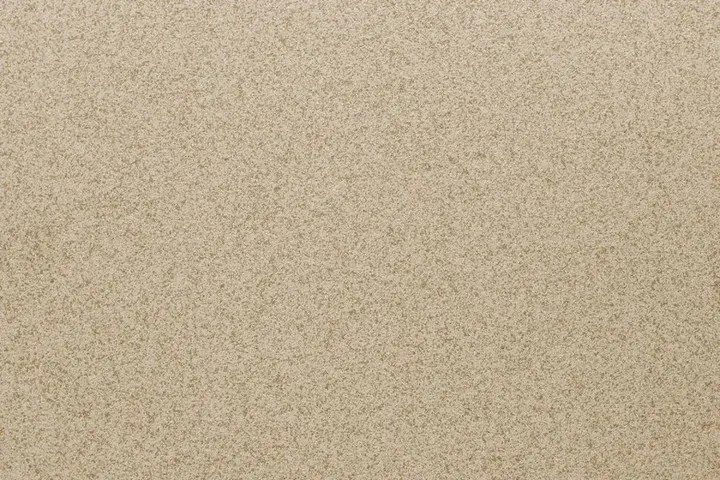
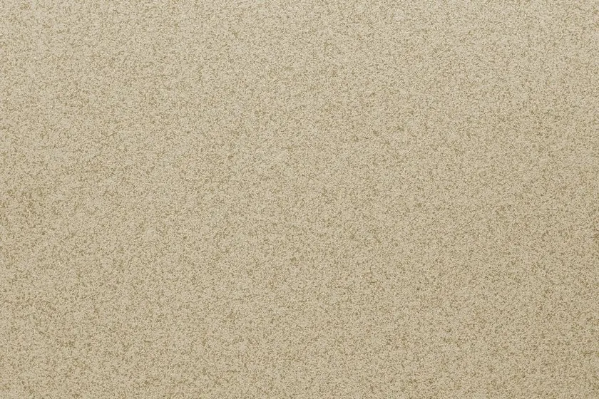
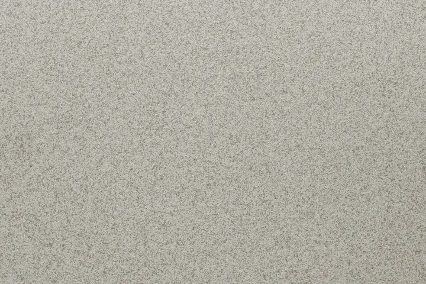
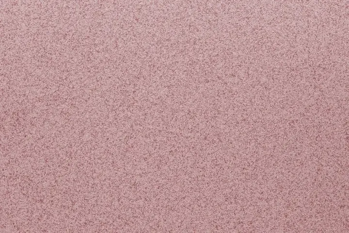
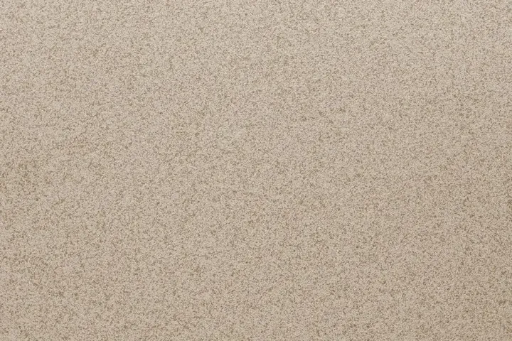
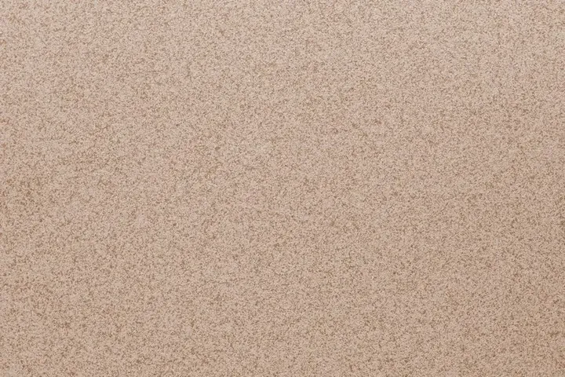
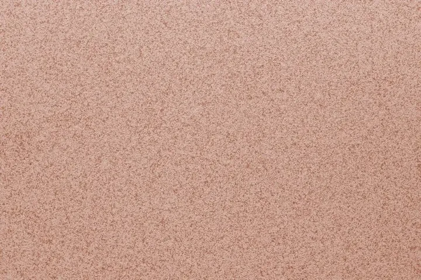
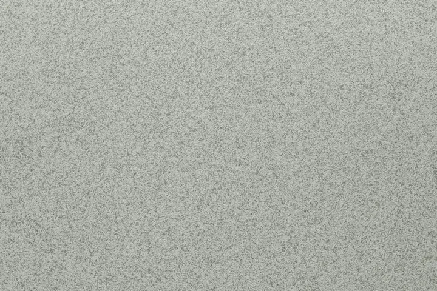
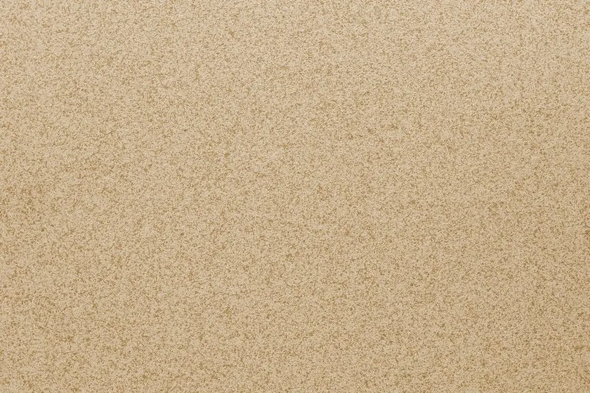
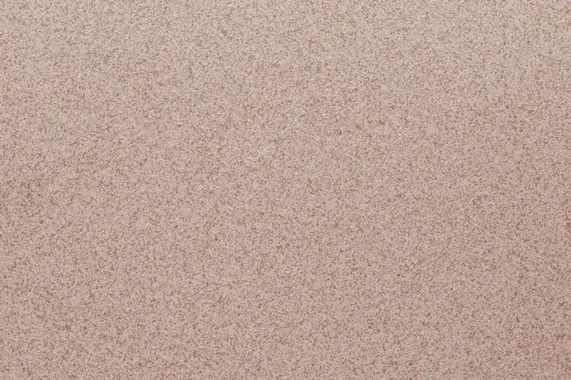
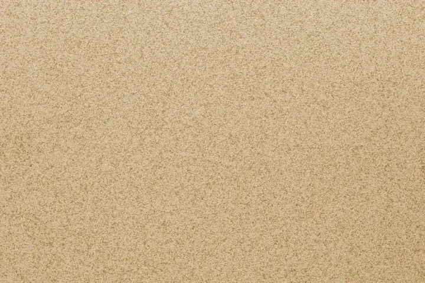
02Як користуватися
Чотири кроки від віяла до композиції
- 01
Розкрийте віяло
Перегляньте смужки від світлих до темних і знайдіть тони, близькі до вашого задуму.
- 02
Приміряйте до простору
Піднесіть смужку до стіни, підлоги й меблів. Подивіться на неї вранці, вдень і ввечері.
- 03
Знайдіть код у каталозі
Введіть код відтінку у пошук нижче, щоб побачити його в цифровому каталозі й додати в композицію.
- 04
Складіть композицію
Поєднайте кілька відтінків у генераторі й отримайте розрахунок на вашу площу.
03Колекція DV
Іменні відтінки колекції DV
Відтінки Dvatone з назвами й описами. Реальне фото є для DV 033; для інших відтінків скани зразків буде додано.
DV 033
Медова пробка
Насичений колір із медовими нотками та текстурою пробки. Металеві відблиски додають розкоші та об’єму.
DV 056
Сріблястий іній
Холодний світло-сірий з металевим характером, нагадує колір ранкового інею або чистого алюмінію.
DV 011
Хмарна слонова кістка
Світлий відтінок з ефектом м’якої акварельної хмарності, створює легкість повітря.
DV 029
Північний шторм
Глибокий синьо-сірий з холодним сталевим характером, оксамитове покриття.
DV 010
Теплий пісок
М’який бежевий відтінок із мінеральною глибиною, фактура висушеного сонцем пісковика.
DV 004
Тиша пустелі
Теплий піщаний нейтрал з ефектом візуальної тиші, спокій пустельного ранку.
04Цифровий каталог
Сотні відтінків
Усі відтінки каталогу в стандартах NCS, 5051 і RAL. Екран передає характер фактури, остаточний колір перевіряйте на віялі.
Позначка «Фото» означає знімок реального зразка покриття. Решту відтінків показано кольором каталогу на екрані.
Нічого не знайдено
Від каталогу до композиції
Поєднайте кілька відтінків у генераторі або замовте колірне віяло для роботи на об’єкті.